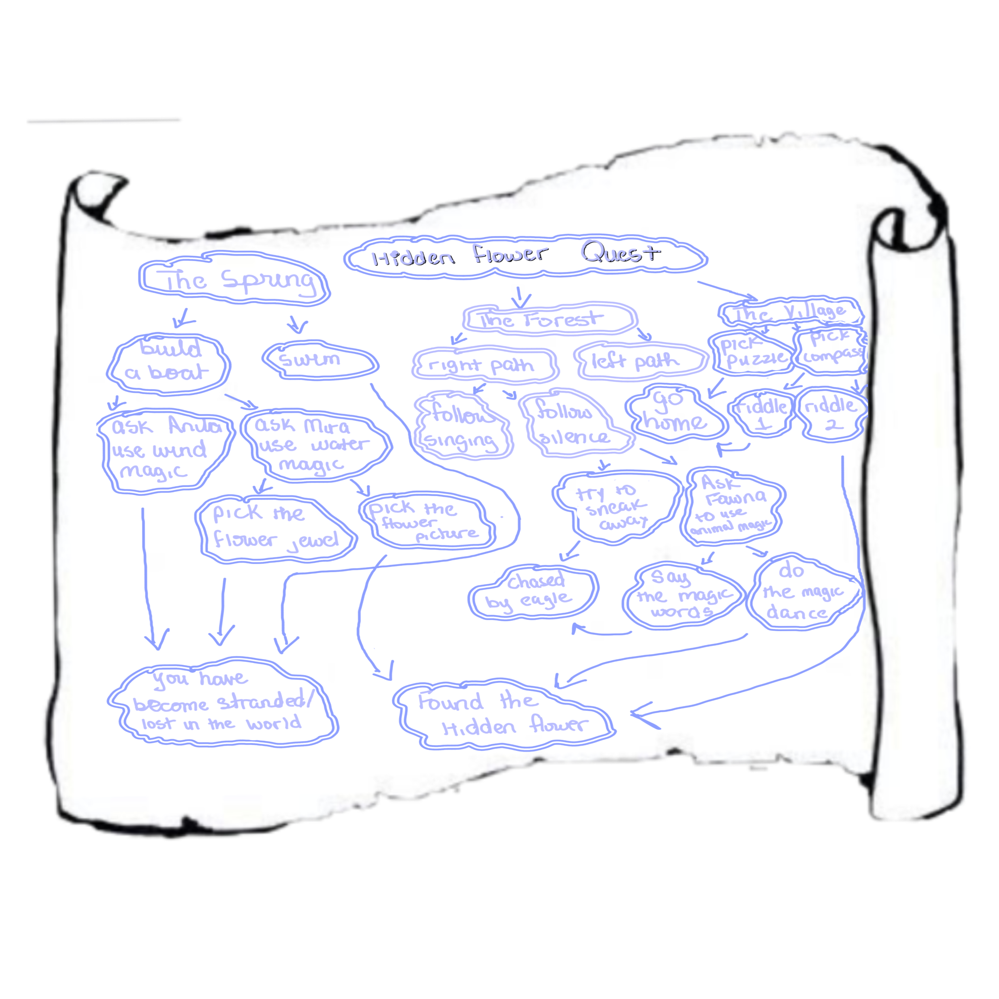

My Narrative Story is set in a fantasy world called Willow Haven, where fairies live. Fairies thrive on Willowglow ash there, and you hear that there is a Hidden Flower in three different parts of the world that has a magical form of that ash which no one has found yet. Everyone believes it's a myth, but you decide to gather your three friends: Anila (wind fairy), Mira (water fairy), and Fawna (animal fairy), and set out on a quest to find the Hidden Flower.
You will come across some quick-thinking decisions that will determine if you can successfully come across and retrieve the hidden flower, but there may be some misfortune or dead ends along the way.
Below is the map I created for my story, which has all the choices that branch into possible endings!

This image represents a scene in my story.